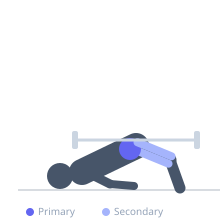

Exercise guide / Barbell Glute Bridge
Barbell Glute Bridge
The barbell glute bridge is performed lying on the floor with a barbell placed across the hips, driving the hips upward from the floor to full extension. Unlike the barbell hip thrust, the upper back remains flat on the floor rather than elevated on a bench, reducing the range of motion but requiring no bench. It is an effective and accessible glute exercise that provides high levels of gluteus maximus activation at the end-range hip extension position.
Primary muscles
gluteus maximus
Secondary muscles
biceps femoris long head
semitendinosus
rectus femoris
Stabilizers
transverse abdominis
erector spinae
Equipment
Standard Barbell
Optional
Weight Plates


Starting position
- Lie on your back with knees bent and feet flat on the floor, hip-width apart. Place the barbell across your hips, with a pad or towel for comfort.
Setup
- Roll the barbell over the legs to position it across the hip crease. Use a barbell pad or folded towel to reduce discomfort on the anterior hip bones.
Steps
- Step 1: Lie on your back, bar across the hips, feet hip-width, knees at approximately 90°. Hold the bar lightly at each side.
- Step 2: Drive through both feet to push the hips upward toward the ceiling.
- Step 3: Squeeze the glutes forcefully at the top until the hips, knees, and shoulders form a straight line.
- Step 4: Hold the peak contraction for one second.
- Step 5: Lower the hips to the floor in a controlled manner.
Coaching cues
- Drive through the heels — not the toes
- Tuck the pelvis slightly at the top — don't arch the lower back
- Squeeze the glutes hard — hold the top for a beat
Breathing
- Exhale as you drive the hips up. Inhale as you lower.
Range of motion
- Hips descend to the floor at the bottom. Full hip extension at the top — body forms a straight line from knees to shoulders.
Tempo
- 1-1-2-0 (drive up 1s, squeeze 1s, lower 2s)
Common mistakes
- Hyperextending the lower back at the top — the top position should be a neutral spine plank, not an arched back
- Feet placed too far away, shifting load to the hamstrings rather than glutes
- Not squeezing the glutes at the top
Safety
- Use a barbell pad — the hip crease is a sensitive area under load
- Ensure the barbell is stable before beginning
Training
- strength: 5–10 reps
- hypertrophy: 10–20 reps
- endurance: 20–30 reps
- strength: 3–4 sets
- hypertrophy: 3–4 sets
- endurance: 2–3 sets
- Rest: {'strength': 120, 'hypertrophy': 60, 'endurance': 45}